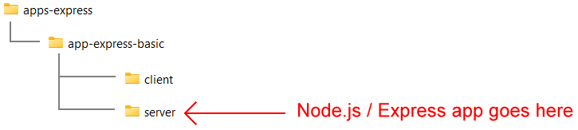
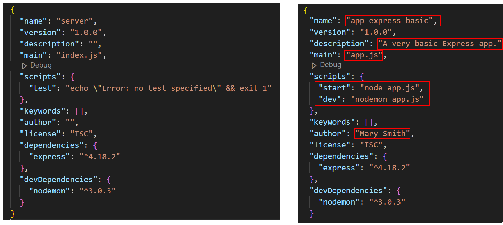
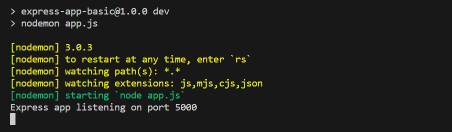

Learning Goals
At the end of this Tutorial, you will be able to:
- Create a basic app with Node.js and the Express framework that can listen to browser requests and send a response.
About Express
Express is a Node.js web application framework that makes it easier to work with APIs. An Express can interface with nearly any database using any user authentication scheme.
Creating a folder structure
Before continuing, close any Node.js apps that may be running on your machine. Also close any open terminals.
Create a folder structure for your Express-powered app. See below.
Some developers name the two folders for a full-stack app as /frontend and /backend. And sometimes the /server or /backend folder will be named /api or /apis.
Creating a basic Express app
Follow the steps below. You must have Node.js installed on your machine.
-
Open a Command prompt or VS Code Terminal, and navigate to the
/server (or /backend or /apis) folder that
will hold your app. For example:
cd apps-express/app-express-basic/server -
Run the following command to create a package.json file for
your new app.
npm init -y
Your package.json file will look as follows.
-
Install the Express module locally:
npm i express -
Next, install the nodemon module locally as a dev dependency:
npm i --save-dev nodemon
You will now see that a /node_modules sub-folder with over 700 files has been created within your /server folder.
- Open your package.json file. It should look similar to that shown on the left below. Update this file as shown below on the right, and save the file.  Because you haven't installed the express and nodemon modules globally, you can't launch them from the command line (unless you add them to the path). That is why you need to call them with either of the two npm scripts in package.json.
-
Create a new text file, paste in the following code, and save the
file as app.js in your app folder:
In this example, the port number is 5000. But you can use any valid port number.const express = require('express') const app = express() const port = 5000 app.get('/', async (req, res) => { // Response sent to browser res.send('Hello Web Browser!') }) app.listen(port, () => { // Outputs to terminal console.log(`Express app listening on port ${port}`) }) -
Finally, in your terminal, start your new Express server:
npm run dev
Your terminal window should look as follows:
And you should see the following in your web browser for the chosen port number.

Reviewing the Express app code
Let's examine the code for this basic Express app line by line.
In summary, you will be using various methods of the app object, where app is your named instance of an Express application.
app.method(arguments)
The app object has various properties and methods for managing the server, routes, middleware, and more.
Begin by importing the express function, which is a top-level function exported by the Express module. Assign this exported function to the variable named express.
const express = require('express')Next, call the express function, which creates and returns an Express application object. This object is stored in the variable app.
const app = express()To be able to use various methods of the app object, such as .listen(), .get(), and .post, you need to specify a port number. For example:
const port = 5000The .get() method of app can take two arguments: the route and a callback function.
app.get(<route>, <callback function(args)>)In this example, the route is the home page '/'.
app.get('/', async function(args) {
// Send a response to browser
})You could rewrite the asynchronous callback function as an arrow function.
app.get('/', async (args) => {
// Send a response to browser
})The callback function has access to the request (req) and response (res) objects and can accept them as arguments.
app.get('/', (req, res) => {
// Send a response to browser
})Express offers a .send() method to send a response to the browser. This method is not available in 'raw' Node.js.
app.get('/', (req, res) => {
res.send('Hello Web Browser!')
})Express infers the content type and sets the content type header. Express also infers the status code.
Use the .listen() method to listen to browser requests on the chosen port.
app.listen(port);Express assumes the server name is 'localhost' and protocol is 'http'. So there is no need to enter these details.
Optionally, you can pass a callback function to the .listen() method. For example:
app.listen(port, () => {
console.log(`Example app listening on port ${port}!`)
})
Order of app.get and app.listen methods
The order in which you enter the app.listen() method and route handlers such as app.get() does not affect the functionality of the app. When you define a route, Express simply registers the route internally. It is only when you call app.listen() that the server starts and begins to listen on the specified port for incoming requests.
However, it's common practice enter all the routes before the app.listen() call. This convention logically separates the setup phase (defining middleware, routes, etc.) from the action of starting the server.